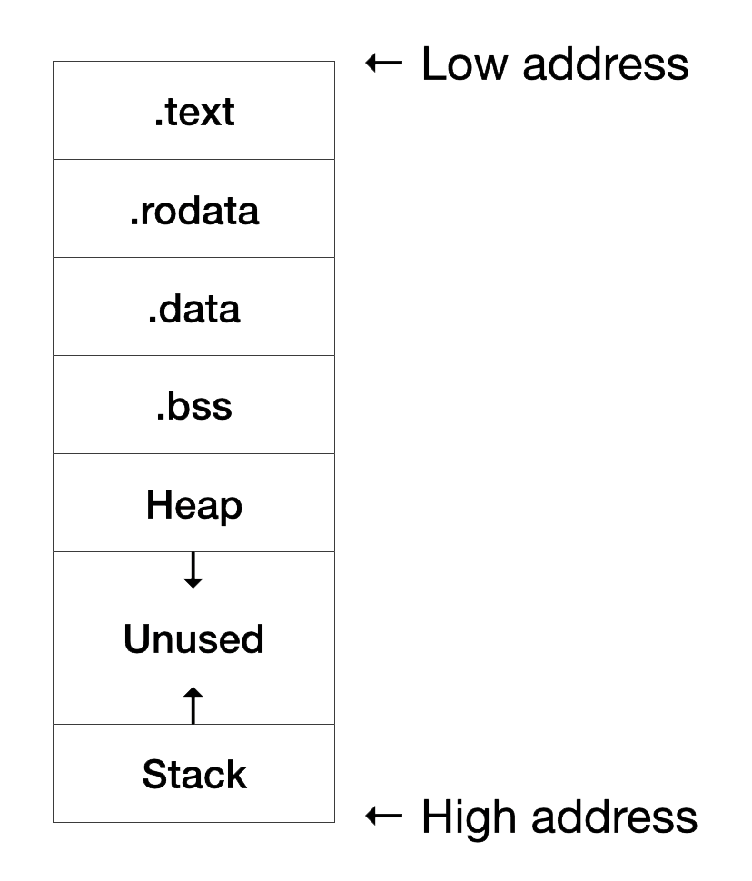

调整内存布局
上一节中我们看到，编译出的程序默认被放到了从 0x11000 开始的位置上：
运行输出
start address: 0x0000000000011000
...
Program Header:
PHDR off 0x0000000000000040 vaddr 0x0000000000010040 ...
LOAD off 0x0000000000000000 vaddr 0x0000000000010000 ...
LOAD off 0x0000000000001000 vaddr 0x0000000000011000 ...
STACK off 0x0000000000000000 vaddr 0x0000000000000000 ...
这是因为对于普通用户程序来说，代码和数据一般放在低地址空间上的。
对于 OS 内核，一般都将其地址空间放在高地址上。并且在QEMU模拟的 RISC-V 中，DRAM内存的物理地址是从 0x80000000 开始，有128MB大小（如想进一步了解，可参看qemu/hw/riscv/virt.c中的VIRT_DRAM的赋值，以及实验指导二中物理内存探测小节）。因此接下来我们需要调整程序的内存布局，改变它的链接地址。
[info] 程序的内存布局
一般来说，一个程序按照功能不同会分为下面这些段：
- .text 段：代码段，存放汇编代码
- .rodata 段：只读数据段，顾名思义里面存放只读数据，通常是程序中的常量
- .data 段：存放被初始化的可读写数据，通常保存程序中的全局变量
- .bss 段：存放被初始化为 0 的可读写数据，与 .data 段的不同之处在于我们知道它要被初始化为 0，因此在可执行文件中只需记录这个段的大小以及所在位置即可，而不用记录里面的数据，也不会实际占用二进制文件的空间
- Stack：栈，用来存储程序运行过程中的局部变量，以及负责函数调用时的各种机制。它从高地址向低地址增长
- Heap：堆，用来支持程序运行过程中内存的动态分配，比如说你要读进来一个字符串，在你写程序的时候你也不知道它的长度究竟为多少，于是你只能在运行过程中，知道了字符串的长度之后，再在堆中给这个字符串分配内存
内存布局，也就是指这些段各自所放的位置。一种典型的内存布局如下：

编写链接脚本
我们使用链接脚本（Linker Script）来指定程序的内存布局。创建文件 os/src/linker.ld：
os/src/linker.ld
/* 有关 Linker Script 可以参考：https://sourceware.org/binutils/docs/ld/Scripts.html */
/* 目标架构 */
OUTPUT_ARCH(riscv)
/* 执行入口 */
ENTRY(_start)
/* 数据存放起始地址 */
BASE_ADDRESS = 0x80200000;
SECTIONS
{
/* . 表示当前地址（location counter） */
. = BASE_ADDRESS;
/* start 符号表示全部的开始位置 */
kernel_start = .;
text_start = .;
/* .text 字段 */
.text : {
/* 把 entry 函数放在最前面 */
*(.text.entry)
/* 要链接的文件的 .text 字段集中放在这里 */
*(.text .text.*)
}
rodata_start = .;
/* .rodata 字段 */
.rodata : {
/* 要链接的文件的 .rodata 字段集中放在这里 */
*(.rodata .rodata.*)
}
data_start = .;
/* .data 字段 */
.data : {
/* 要链接的文件的 .data 字段集中放在这里 */
*(.data .data.*)
}
bss_start = .;
/* .bss 字段 */
.bss : {
/* 要链接的文件的 .bss 字段集中放在这里 */
*(.sbss .bss .bss.*)
}
/* 结束地址 */
kernel_end = .;
}
时至今日我们已经不太可能将所有代码都写在一个文件里面。在编译过程中，我们的编译器和链接器已经给每个文件都自动生成了一个内存布局。这里，我们的链接工具所要做的是最终将各个文件的内存布局装配起来生成整个内核的内存布局。
我们首先使用 OUTPUT_ARCH 指定了架构，随后使用 ENTRY 指定了入口点为 _start 函数，即程序第一条被执行的指令所在之处。在这个链接脚本中我们并未看到 _start ，回忆上一章，我们为了移除运行时环境依赖，重写了入口 _start 。所以，链接脚本宣布整个程序会从那里开始运行。
链接脚本的整体写在 SECTION{ } 中，里面有多个形如 output section: { input section list } 的语句，每个都描述了整个程序内存布局中的一个输出段 output section 是由各个文件中的哪些输入段 input section 组成的。
我们可以用 *( ) 来表示将各个文件中所有符合括号内要求的输入段放在当前的位置。而括号内，你可以直接使用段的名字，也可以包含通配符 *。
单独的一个 . 为当前地址（Location Counter），可以对其赋值来从设置的地址继续向高地址放置各个段。如果不进行赋值的话，则默认各个段会紧挨着向高地址放置。将一个符号赋值为 . 则会记录下这个符号的地址。
到这里我们大概看懂了这个链接脚本在做些什么事情。首先是从 BASE_ADDRESS 即 0x80200000 开始向下放置各个段，依次是 .text，.rodata，.data，.stack 和 .bss。同时我们还记录下了每个段的开头和结尾地址，如 .text 段的开头、结尾地址分别就是符号 stext 和 etext 的值，我们接下来会用到。
[info] 为什么是 0x80200000
OpenSBI（如想进一步了解，可参看本章的
重写程序入口点小节相关的介绍）将自身放在 0x80000000，完成初始化后会跳转到 0x80200000，因此_start必须位于这个地址。.text 为代码段标识，其第一个放置的就是_start（即.text.entry）。
这里面有一个输入段与其他的不太一样，即 .text.entry，似乎编译器不会自动生成这样名字的段。事实上，它是我们在后面自己定义的。
使用链接脚本
为了在编译时使用上面自定义的链接脚本，我们在 .cargo/config 文件中加入以下配置：
os/.cargo/config
# 使用我们的 linker script 来进行链接
[target.riscv64imac-unknown-none-elf]
rustflags = [
"-C", "link-arg=-Tsrc/linker.ld",
]
它的作用是在链接时传入一个参数 -T 来指定使用哪个链接脚本。
我们重新编译一下，然后再次查看生成的可执行文件：
运行输出
$ cargo build
...
Finished dev [unoptimized + debuginfo] target(s) in 0.23s
$ rust-objdump target/riscv64imac-unknown-none-elf/debug/os -h --arch-name=riscv64
target/riscv64imac-unknown-none-elf/debug/os: file format ELF64-riscv
Sections:
Idx Name Size VMA Type
0 00000000 0000000000000000
1 .text 0000000c 0000000080200000 TEXT
2 .rodata 00000000 000000008020000c TEXT
3 .data 00000000 000000008020000c TEXT
4 .bss 00000000 000000008020000c BSS
...
$ rust-objdump target/riscv64imac-unknown-none-elf/debug/os -d --arch-name=riscv64
target/riscv64imac-unknown-none-elf/debug/os: file format ELF64-riscv
Disassembly of section .text:
0000000080200000 stext:
80200000: 41 11 addi sp, sp, -16
80200002: 06 e4 sd ra, 8(sp)
80200004: 22 e0 sd s0, 0(sp)
80200006: 00 08 addi s0, sp, 16
80200008: 09 a0 j 2
8020000a: 01 a0 j 0
程序已经被正确地放在了指定的地址上。
到这里，我们清楚了最终程序的内存布局会长成什么样子。下一节我们来补充这个链接脚本中未定义的段，并完成编译。